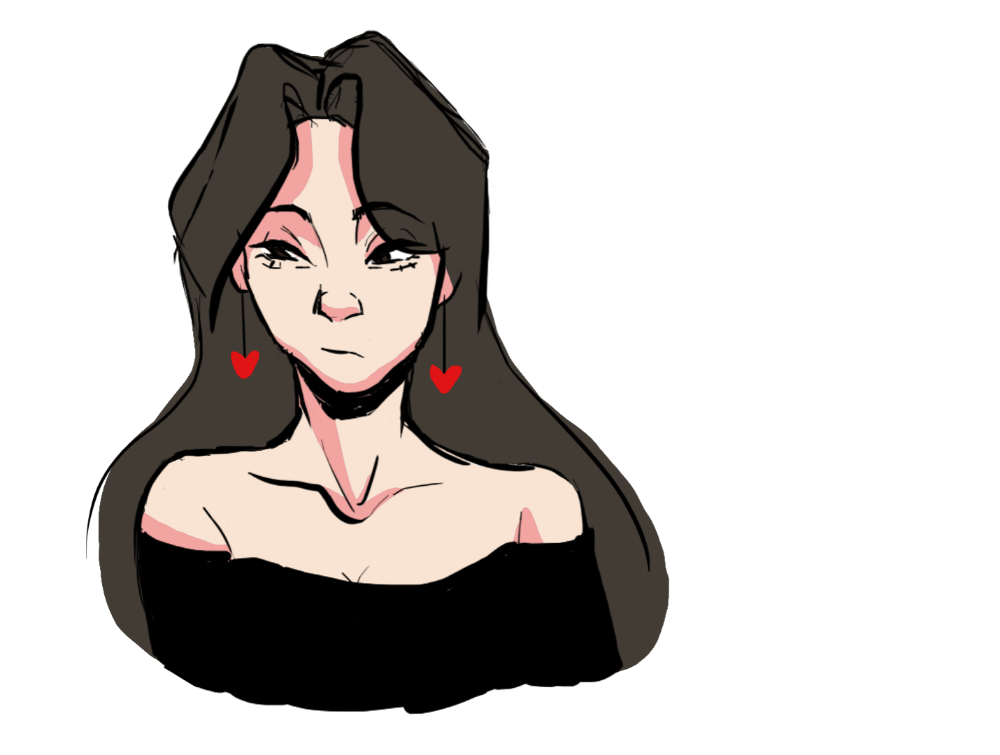

Sketchbook
Vista general de algunos bocetos que hay en mis sketchbooks junto a un par de animaciones que realicé estos últimos años.
Dibujar ha sido mi hobbie favorito desde que tengo uso de razón y tantos años de práctica y constancia me han llevado a alcanzar un alto nivel en bocetaje, dibujo y pintura.
Sketchbook
Here is an overlook of some of the sketches that are in my sketchbooks along with a couple of animations that I made in the last few years.
Drawing has been my favorite hobby for as long as I can remember and so many years of practice and constancy have led me to reach a high level in sketching, drawing and painting.


